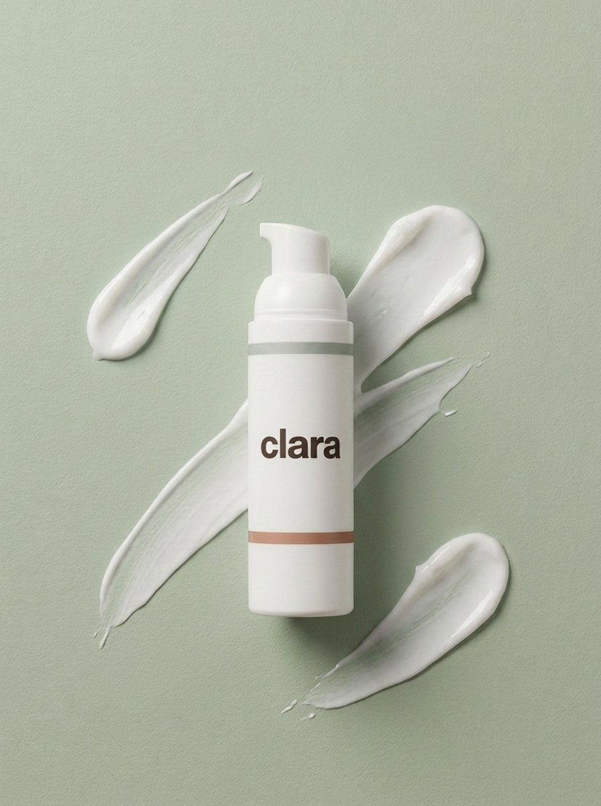
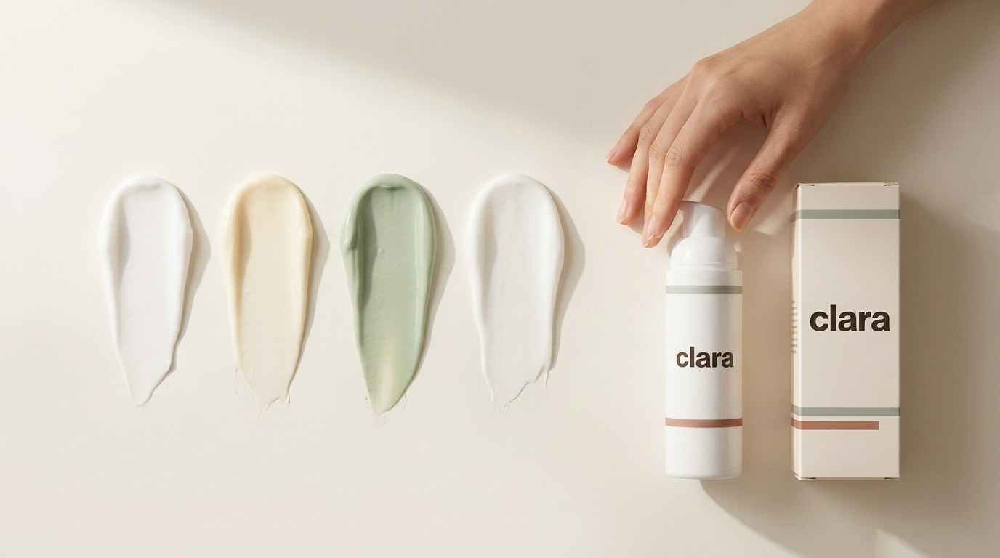

Why a compound cream may help with nerve pain

A compound cream is prepared for your specific pain and reviewed by a doctor before it is made.
When nerve pain sits in one area, a cream can work right where it hurts, with far less medicine reaching the rest of your body.
Nerve pain comes from nerves that have been damaged or have become too sensitive, so they keep sending pain signals. When that pain stays in one defined area, a topical compound cream can act directly on those nerves in the skin, easing the pain where it lives while only a little of the medicine reaches the rest of your body.(1) It is not a cure, and it is not for everyone, but for the right kind of nerve pain it is a gentle and well placed tool.
What is a compound cream?
A compound cream is mixed by a pharmacy to your doctor's exact recipe, combining more than one medicine into a single cream that is absorbed through the skin over the painful area.
Nerve pain does not hurt in just one way, so it is not treated with just one ingredient: the cream blends a few medicines, each aimed at a different part of the pain. Your clara doctor chooses the exact mix and strength for you, and can adjust it over time.
Why a cream instead of a pill?
It works where the pain is
Applied over the painful area, the medicine concentrates right where it is needed instead of travelling through your whole body first. For nerve pain that sits in one spot, that is exactly the point.(1)
Far less reaches the rest of you
Because very little is absorbed into the bloodstream, a cream can be a sensible choice for older adults or anyone already taking several medicines, who may not tolerate the drowsiness or dizziness of nerve pain pills.(1, 2)
It plays well with the rest of your plan
The cream supports the rest of your care, it does not replace it. It can sit alongside your pills, your movement and the other steps your clara doctor recommends.

Because little reaches the bloodstream, a cream is gentler on the stomach, heart and kidneys than pills.
Where a cream fits, condition by condition
The honest answer is that a cream helps more for some kinds of nerve pain than others. Here is where each of the conditions we treat stands.
Pain after shingles
This is the nerve pain where treating through the skin is best proven. The pain stays in one band of skin, so a cream works right where it hurts. Lidocaine calms the touch sensitive pain, and the best studied mix pairs amitriptyline with ketamine; in studies of more than 700 people it eased pain about as well as a common nerve pill, with very little absorbed into the body.(2, 4)

Diabetic nerve pain
When the pain is focused in the feet, a cream can act right where it hurts. In a head to head study a cream with amitriptyline eased diabetic nerve pain about as well as capsaicin, with fewer skin side effects, and capsaicin itself is a proven topical option.(2, 3)

Fibromyalgia
Fibromyalgia is widespread pain from how the whole nervous system handles pain, so a cream is not a treatment for the condition itself. But many people also carry focused pain on top of it, a sore joint, knotted muscle areas, low back pain or a patch of nerve pain, and those areas are what a cream is made for. clara offers it here as an optional trial alongside whole body care, never as a cure.(5)
What is inside, and why

A nerve that hurts in several ways is best calmed in several ways. Each group below targets a different part of the pain. Not everyone receives every ingredient; your clara doctor builds the recipe around your pain.
Numbing agents: quiet the signal
Lidocaine is a local anaesthetic, the same idea as the numbing a dentist uses. It gently turns down the pain signals travelling along the irritated nerves just under the skin, which is especially helpful for the touch sensitive pain that light contact sets off.(4)
Nerve calming medicines: settle the misfiring
Small amounts of amitriptyline and ketamine, sometimes with gabapentin, are the best studied compounded pairing for nerve pain. They help settle nerves that have learned to fire too easily, and very little is absorbed into the body.(2)
Capsaicin: from chili peppers
Capsaicin is a proven topical option for nerve pain, used over the painful skin on its own or alongside the others. A high strength version is approved specifically for pain after shingles.(3)
What to expect, honestly
A cream usually takes the edge off rather than erasing pain, and the evidence is not all one way: one large trial of multi ingredient pain creams found no benefit over a placebo, and because each one is compounded for the individual it is not approved by the FDA. The sensible approach is a fair four to six week trial as one part of a plan your clara doctor builds and monitors with you.(5) If it has not helped by then, tell your care team and we will adjust the plan.
How to use it safely
- Apply a thin layer to the painful area, usually a few times a day, or as directed.
- Never apply it to broken, cut, raw or wounded skin. Damaged skin can let too much medicine into your body. This one matters most.
- Keep it away from your eyes and wash your hands after applying.
- Do not cover it with tight dressings or a heating pad, and let it dry before it touches clothing.
- Store it out of reach of children and pets.
See if a cream is right for you
Send a quick note to your clara care team to request a cream trial. A Canadian licensed clara doctor reviews whether a compound cream fits your pain, your history and your other medicines before anything is made or shipped. Request a cream trial →
For nerve pain that sits in one place, a cream can be a quiet, well placed helper: relief where you need it, very little where you do not, used alongside the rest of your plan.
Sources
- Finnerup NB. Nonnarcotic methods of pain management. New England Journal of Medicine. 2019;380(25):2440-2448.
- Sawynok J, Zinger C. Topical amitriptyline and ketamine for post-herpetic neuralgia and other forms of neuropathic pain. Expert Opinion on Pharmacotherapy. 2016;17(4):601-609.
- Derry S, Rice AS, Cole P, et al. Topical capsaicin (high concentration) for chronic neuropathic pain in adults. Cochrane Database of Systematic Reviews. 2017;1:CD007393.
- Rowbotham MC, Davies PS, Verkempinck C, Galer BS. Lidocaine patch: double-blind controlled study of a new treatment method for post-herpetic neuralgia. Pain. 1996;65(1):39-44.
- Brutcher RE, Kurihara C, Bicket MC, et al. Compounded topical pain creams to treat localized chronic pain: a randomized controlled trial. Annals of Internal Medicine. 2019;170(5):309-318.
This guide is general education from your clara care team and is not a substitute for personal medical advice. Compounded creams are prepared for the individual, are not FDA approved, and their ingredients, doses and suitability are decided by your clara doctor based on your health, allergies and other medicines.